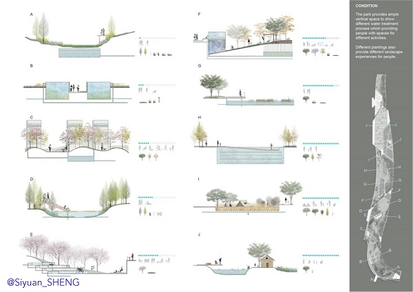

- [DATE] 04/2017 - 05/2017
- [SITE] Shanghai, China
- [AREA] 25.57ha
- [Personal Work] Landscape design, water purification process design, experience design
-
The green space construction on both sides of the Huangpu River is being gradually complicated, but the green space of the construction has only achieved the function of connection. Each of the green land seems have similar functions for local people.
- The address selected by the project is one of them. After comprehensively considering the nature and the function of its surrounding land, the design has become a multi-functional green space intergrating leisure and entertainment, rainwater purification, science education,
and farmland experience.
|
|
| |
- The park provides ample vertical spaces to show different water treatment process which providing local people with enough spaces for multiple different activities.
- Different plantings are also providing different landscape scene, creating different environment and atmosphere for different activities. This can provide people with different tour experiences.
- The sections in the drawings shows the process of water cleaning and the sequence of touring.
|
 |
| |
-
The details of water purification process can be devided in to eight steps and can be basically devided in to three types, filtering, sedimentation and oxygening.
-
Also, the differnet activities are listed in the sequence of visiting. The landscape can be devided based on activities in to different sections shown in the drawing.
|
|
| |
-
After the purification, these water will be reused for plant-growing or fish-farming. In the process, different kinds of technologies including different kinds of precipitation, different kinds of filtration and biological methods are included.
-
After this process, the quality of the water can meet the standard of urban domestic water use. In addition to the effect of water purification, the process can also benefit to ecological diversity and emission reduction.
What's more, it expanded public green spaces and realize the function of education at the same time.
-
|
|